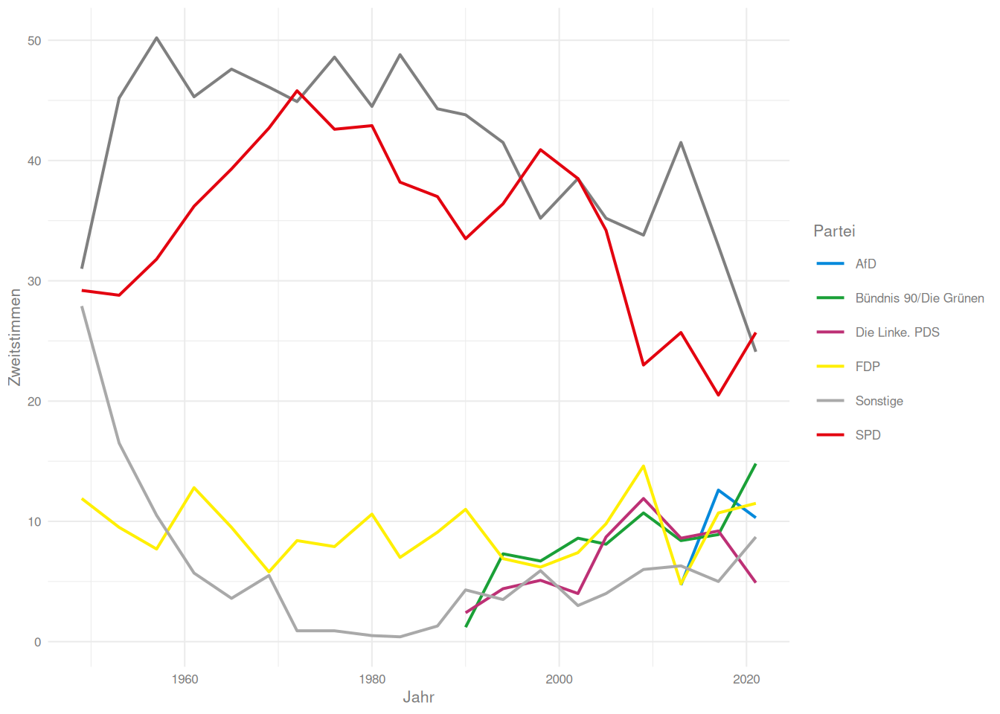
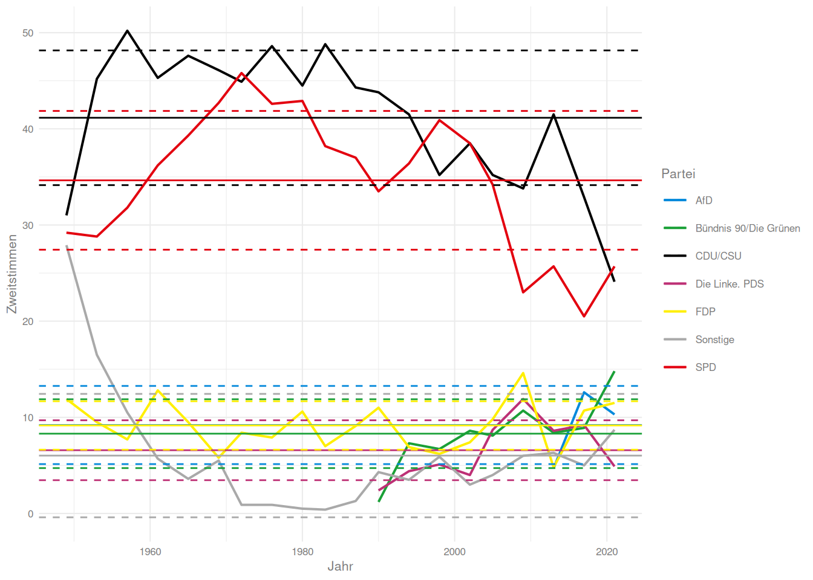

# A tibble: 6 × 25
Force HOMICIDE `Attempted murder`
<chr> <dbl> <dbl>
1 Avon and Somerset 10 20
2 Bedfordshire 4 10
3 British Transport P… 1 3
4 Cambridgeshire 7 13
5 Cheshire 3 6
6 Cleveland 7 6
# ℹ 22 more variables:
# `Intentional destruction of viable unborn child` <dbl>,
# `Causing death by dangerous driving` <dbl>,
# `Causing death by careless driving when under the influence of drink or drugs` <dbl>,
# `Causing death by careless or inconsiderate driving` <dbl>,
# `Assault with intent to cause serious harm` <dbl>,
# `Endangering life` <dbl>, …
satisfaction %>%head()
# A tibble: 6 × 6
Code Region Average_Satisfaction
<chr> <chr> <dbl+lbl>
1 K02000001 United Kingdom 7
2 K03000001 Great Britain 7
3 E92000001 England 7
4 E12000001 North East 7
5 E11000004 Tyne and Wear Me… 7
6 E06000001 Hartlepool UA 7
# ℹ 3 more variables:
# Average_Worthwile <dbl+lbl>,
# Average_Happy_Yesterday <dbl+lbl>,
# Average_Anxious_Yesterday <dbl>
Wir wollen die drei vorbereiteten Teile nun in einem Datensatz integrieren. Dieser soll pro Region 1. die Anzahl aller drogenbezogenen Krankenhausaufenthalte 2. die Anzahl der (versuchten) Mordfälle 3. die mittlere Zufriedenheit über alle Skalen beinhalten
Wir fangen damit an, die Datensätze wie gewünscht vorzubereiten. Aus dem drugs-Datensatz brauchen wir die Regionsbezeichnung, die ONS-Codes und natürlich die Zahl der Einweisungen:
Statt wie in select umzubenennen erstellen wir hier natürlich eine neue Spalte
2
Beim Erstellen des Skripts habe ich festgestellt, dass Haven-Labels keine Arithmetik mögen - so kann man die entfernen.
sum ist keine vektorisierte Funktion! Um eine neue Summenwert pro Zeile zu bilden, sind + und / nötig
Antwort aufdecken
join_
Jetzt müssen wir das ganze nur noch zusammenfügen. Dafür benutzen wir die Familien der join-Funktionen
Zuerst fügen wir die Anzahl der Straftaten zu der Anzahl der Krankenhauseinweisungen hinzu. Dabei matchen wir die Regionen über das Regions-Schlüsselwort und behalten nur die Fälle, in denen in beiden Datensätzen ein Schlüsselwort auftaucht:
overall <- drugs %>%inner_join(crime, by =join_by(Region == Force))overall
Dem overall-Datensatz fügen wir jetzt noch die satisfaction hinzu. Hierzu nutzen wir die ONS-Codes. Dabei wollen wir alle Fälle in overall behalten. Da wir die Spalten umbenannt haben, brauchen wir keine Definition des “by”-Arguments.
overall <- overall %>%left_join(satisfaction)
Joining with `by = join_by(`ONS-Code`)`
summary(overall)
ONS-Code Region
Length:21 Length:21
Class :character Class :character
Mode :character Mode :character
Admissions Homicide
Min. : 0.00 Min. : 4.00
1st Qu.: 44.00 1st Qu.: 6.00
Median : 56.00 Median : 8.50
Mean : 96.33 Mean : 8.85
3rd Qu.: 98.00 3rd Qu.:10.25
Max. :552.00 Max. :17.00
NA's :1
Attempted murder Satisfaction
Min. : 2.00 Min. :7.000
1st Qu.: 5.75 1st Qu.:7.250
Median : 7.50 Median :7.500
Mean : 9.75 Mean :7.429
3rd Qu.:13.50 3rd Qu.:7.500
Max. :22.00 Max. :7.750
NA's :1
Uns fällt jetzt aber auf, dass wir lieber klein geschriebene Spaltennamen hätten, wie doof. Dafür gibt es mit rename aber natürlich auch eine praktische Lösung im tidyverse. rename erwartet entweder die Angabe jedes Namens, der geändert werden soll als Wert und die neuen Namen als Namen der Argumente. Wir können aber auch die praktischere Variante rename_with nutzen und unsere Änderung mit einer Anweisung und tidy-select-helpern durchführen:
Sie benötigen hier wieder die Datensätze aus der Aufgabe zum Import. Der Code zum Import war der folgende:
library(tidyverse)temp <-read_csv2('data/temp.csv')## ℹ Using "','" as decimal and "'.'" as grouping mark. Use `read_delim()` for more control.## Rows: 338 Columns: 3## ── Column specification ──────────────────────────## Delimiter: ";"## dbl (2): temp, cw## date (1): date## ## ℹ Use `spec()` to retrieve the full column specification for this data.## ℹ Specify the column types or set `show_col_types = FALSE` to quiet this message.library(haven)covid_cases <-read_sav("data/covid_cases.sav")library(readxl)charts <-read_excel("data/charts.xlsx")
Fügen Sie den Covid und den Temperatur-Datensatz anhand der Kalenderwoche zusammen. Dabei sollen alle Zeilen, die im Temperatur-Datensatz vorliegen auch im neuen Datensatz vorliegen. Ersetzen Sie anschließend alle möglicherweise vorliegenden fehlenden Werte durch Nullen.
Benennen Sie abschließend die Kalender-Wochen-Spalte in calendar_week und die Fall-Spalte im new_covid_cases um. Lesen Sie dazu die Hilfeseite der rename-Funktion
Speichern Sie sich den so erstellten Datensatz für später als ‘temp_covid.csv’ ab.
temp %>%left_join(covid_cases, by =join_by(cw == calendar_week)) %>%mutate(across(where(is.numeric), ~case_when(is.na(.) ~0, T ~ .))) %>%rename('calender_week'='cw', 'new_covid_cases'='new_cases') %>%write_csv('temp_covid.csv')
Antwort aufdecken
Pivotieren von Datensätzen
Für SPSS-Nutzer:innen sehen viele Datensätze, die wir bisher gesehen haben, wahrscheinlich etwas seltsam aus. Das liegt vielleicht zum Teil daran, dass das tidyverse grundsätzlich das long-Format dem wide-Format vorzieht.
Das folgende Beispiel der Ergebnisse der Bundestagswahlen nach 2002 1 illustriert vielleicht den Unterschied. Im wide-Format ist das zentrale Ziel dass pro Fall eine Zeile vorliegt, im long-Format wird pro Variable eine Spalte angelegt.
Beide Formate haben Vorteile, im tidyverse ist das Hauptargument (neben Geschmaack) für das long-Format, dass sich so vektorisierte Funktionen direkt auf eine Variable anwenden lassen.
Um zwischen den Formaten zu konvertieren gibt es im tidyverse die pivot_wider und pivot_longer Funktionen.
Der Original-Datensatz zu den Bundestagswahlen sieht wie folgt aus:
Wir würden gern eine ggplot-Grafik erstellen, in der die Verläufe der Stimmen über die Zeit dargestellt sind. Da wir alle Zweitstimmen-Prozente auf einem aesthetic darstellen wollen, brauchen wir den Datensatz aber natürlich im long-Format
Das pivotieren geht mit pivot_longer auch sehr einfach:
Scale for colour is already present.
Adding another scale for colour, which will
replace the existing scale.

Antwort aufdecken
Zu dieser Grafik wollen wir noch Mittlere Werte über die Zeit +/- Streuungen als Linien hinzufügen.
Wie ginge das denn mit summarise und across? Und wie könnte ich die Linien hinzufügen?
btw_summary <- btw_long %>%group_by(Partei) %>%summarise('M'=mean(Zweitstimmen, na.rm=T),'SD'=sd(Zweitstimmen, na.rm=T),lower = M - SD,upper = M + SD)
Den Datensatz können wir jetzt benutzen:
btw_long %>%ggplot(aes(x = Jahr, y = Zweitstimmen, color = Partei)) +geom_line(linewidth =0.7) +geom_hline(data = btw_summary,aes(yintercept = M, color = Partei))+geom_hline(data = btw_summary,aes(yintercept = lower, color = Partei),lty =2)+geom_hline(data = btw_summary,aes(yintercept = upper, color = Partei),lty =2)+scale_color_manual(values =c(AfD ='#0489DB','Bündnis 90/Die Grünen'='#1AA037','CDU/CSU'='#000000','Die Linke. PDS'='#BD3075',FDP ='#FFEF00',Sonstige ='darkgrey',SPD ='#E3000F' ))
Scale for colour is already present.
Adding another scale for colour, which will
replace the existing scale.

Antwort aufdecken
Unter der Grafik wollen wir zum Schluss noch die Mittelwerte pro Partei hintereinander als Spalten darstellen. Das heißt, wir müssen die Tabelle ins wide-Format überführen. Auch dieser Schritt ist relativ einfach:
btw_summary %>%select(Partei, M) %>%pivot_wider(values_from = M,names_from = Partei,names_prefix ='M ')
Stellen Sie die drei Verläufe in einem facettierten Liniendiagramm dar. Wenn Sie Lust haben, nutzen Sie vorher str_extract um die Gruppe aus der Namensspalte zu extrahieren.